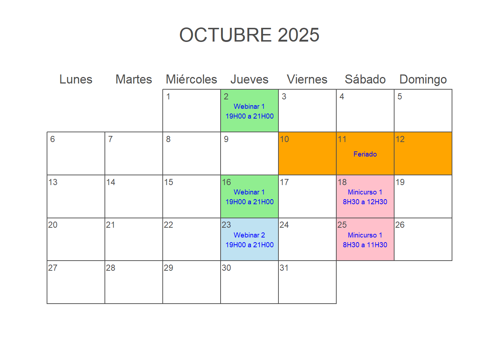
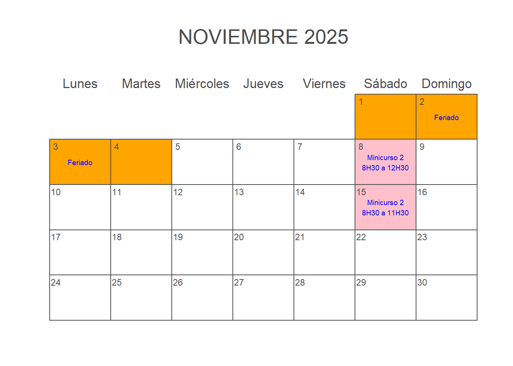
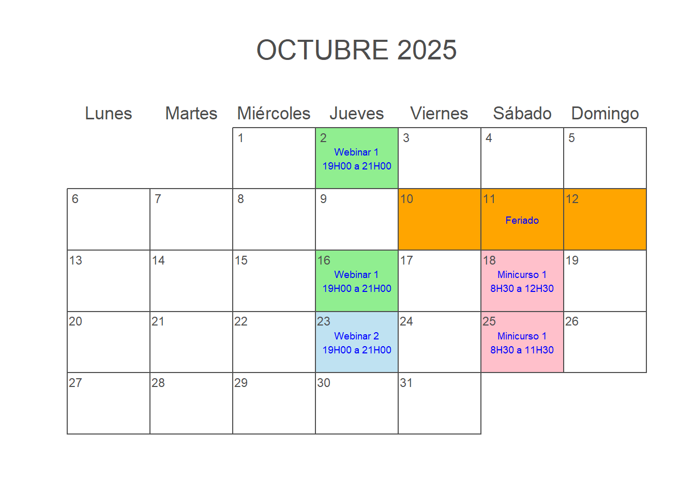
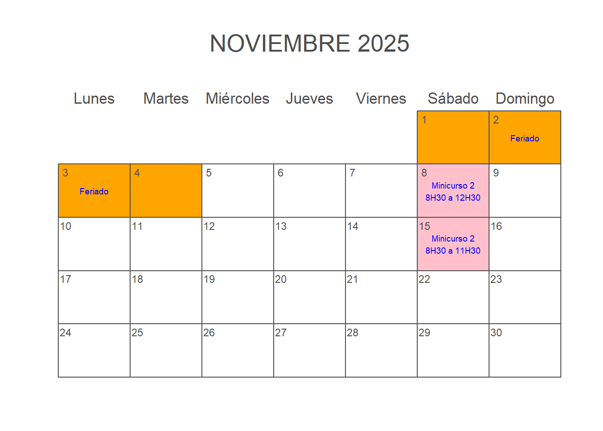

Webinar 1: 4 horas
Webinar 2: 2 horas
Minicurso 1: 7 horas
Minicurso 2: 7 horas
TOTAL: 20 horas
100% online
Indispensable:
Recomendado:
Conocimientos de estadística báscia.
Sistema operativo Windows 10/11
Un Análisis Semi-Cuantitativo de la LOES, las Becas y la Profesionalización Docente en Ecuador
Días 2 y 16 de octubre de 19H00 a 21H00. Dos horas cada edición
Este webinar tiene como objetivo analizar críticamente la implementación de la Ley Orgáanica de Educación Superior (LOES), en particular de la Transitoria Décima Tercera y su impacto sobre la profesionalización docente en Ecuador. A través de un enfoque semi-cuantitativo y con base en fuentes oficiales (CES, SENESCYT, INEC), se examinarán:
Se busca ofrecer un espacio de reflexión basado en datos, así como provocar un debate informado sobre los desafíos actuales de la educación superior en el país.
En este webinar exploraremos cómo la Ley Orgánica de Educación Superior (LOES) planteó una ambiciosa meta: profesionalizar al cuerpo docente con miles de PhDs hasta 2017. Pero ¿qué pasó en la práctica?
A través de un análisis semi-cuantitativo con datos del CES, SENESCYT e INEC, revisaremos el diseño, implementación y resultados de los programas de becas nacionales e internacionales. Se discutirá el impacto real de la Transitoria Décima Tercera, los vacíos en planificación, la fuga de cerebros y el cumplimiento (o no) de la compensación académica.
Una historia donde la norma fue apresurada, pero la ejecución dejó dudas. Un espacio para pensar el presente y futuro de la docencia universitaria en Ecuador.
¿A quién podría interesar este webinar?
Este webinar abordará el impacto de la LOES en la profesionalización docente, evaluando la efectividad de los programas de becas, las brechas entre la norma y la práctica, y los desafíos actuales como la fuga de cerebros y la planificación a futuro en la educación superior en Ecuador.
Cuando los hechos no van de la mano con las cifras
Jueves 23 de octubre de 19H00 a 21H00
En este webinar exploramos varios ejemplos de como las estadísticas pueden ser usadas para persuadir o engañar. Partiendo del libro clásico de Darrell Huff “¿Cómo mentir con estadística?”, veremos las formas más comunes de manipular los hechos tales como el uso de muestras sesgadas, escoger promedios convenientes e incluso, visitamos como el propio Huff hizo uso de estas en un libro de su autoría que afortunadamente jamás vio la luz.
Aprende a identificar y evitar las técnicas más comunes para manipular datos tales como muestras sesgadas, selección del promedio, ejes truncados, uso indebido del valor p y más, a través de ejemplos reales. Ideal para comunicadores, periodistas, estudiantes y profesionales que usan datos para tomar decisiones.
Sábado 18 de octubre de 8H30 a 12H30
Sábado 25 de octubre de 8H30 a 11H30
Total: 7 horas clase
Este minicurso tiene como objetivo principal brindar al estudiante herramientas estadísticas de aplicación inmediata mediante el uso del lenguaje R. El programa está diseñado para una audiencia diversa, sin requerir un conocimiento profundo de la teoría estadística ni experiencia previa en programación.
Desde la primera hora de clase, el participante podrá comenzar a utilizar R para el análisis de datos, aprendiendo de forma progresiva la aplicación práctica de distintas pruebas estadísticas —desde pruebas de hipótesis básicas hasta análisis de varianza (ANOVA).
El curso se complementa con ejercicios y actividades de aprendizaje, orientados a reforzar los conocimientos adquiridos y fomentar la autonomía en el uso de R. Al finalizar, los asistentes tendrán la posibilidad de obtener un certificado de aprobación, demostrando su dominio de las herramientas vistas durante el taller.
Utilizar el entorno de R y RStudio para realizar operaciones básicas y gestionar conjuntos de datos.
Aplicar conceptos fundamentales de estadística descriptiva para resumir y explorar datos numéricos y categóricos.
Ejecutar pruebas de hipótesis básicas (como t-test y pruebas de proporciones) utilizando funciones de R.
Realizar análisis de varianza (ANOVA) para comparar medias entre múltiples grupos.
Interpretar resultados estadísticos y presentarlos de manera clara y sustentada.
Integrar buenas prácticas de programación y organización de proyectos en R para análisis reproducibles.
| Módulo | Contenido |
|---|---|
Módulo 1: Generalidades e Introducción a R Duración: 2 horas |
|
Módulo 2: Introducción a la Estadística Inferencial con R Duración: 2 horas |
|
Módulo 3: Estadística Paramétrica con R Duración: 2 horas |
|
Módulo 4: Exportación de resultados Duración: 1 hora |
|
Sábado 8 de noviembre de 8H30 a 12H30
Sábado 15 de noviembre de 8H30 a 11H30
Este minicurso tiene como objetivo principal proveer al estudiante de herramientas prácticas de visualización de datos para su inmediata aplicación. El plan de estudio está diseñado para una audiencia amplia, sin asumir un conocimiento profundo de la teoría detrás de los métodos o de la programación en R.
Desde la primera hora de clase, el cursante será capaz de crear y personalizar gráficos con {ggplot2}, explorando paso a paso cómo transformar datos en representaciones visuales claras y efectivas. A lo largo de las siete horas de curso, se trabajará en la construcción de distintos tipos de gráficos —de dispersión, barras, boxplots, líneas y densidades— además de la incorporación de temas, colores y etiquetas para una presentación profesional.
El curso se complementa con tareas prácticas de aprendizaje que reforzarán los conocimientos adquiridos y permitirán a los asistentes optar por un certificado de aprobación.
Comprender los principios básicos de la visualización de datos y su importancia en el análisis estadístico.
Emplear el paquete {ggplot2} para construir gráficos de alta calidad a partir de datos en R.
Personalizar elementos visuales (colores, temas, etiquetas, escalas) para mejorar la comunicación de resultados.
Combinar y organizar múltiples visualizaciones para explorar relaciones entre variables.
Aplicar visualización exploratoria para identificar patrones, tendencias y valores atípicos en los datos.
Exportar y documentar gráficos reproducibles para presentaciones, reportes y publicaciones.
| Módulo | Contenido |
|---|---|
Módulo 1: Breve Introducción a R Duración: 1 hora |
|
Módulo 2: Introducción a la visualización de datos en R Duración: 4 horas |
|
Modulo 3: Creación de Presentaciones con Quarto Duración: 2 horas |
|